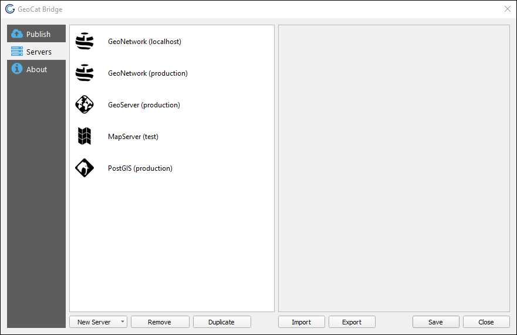
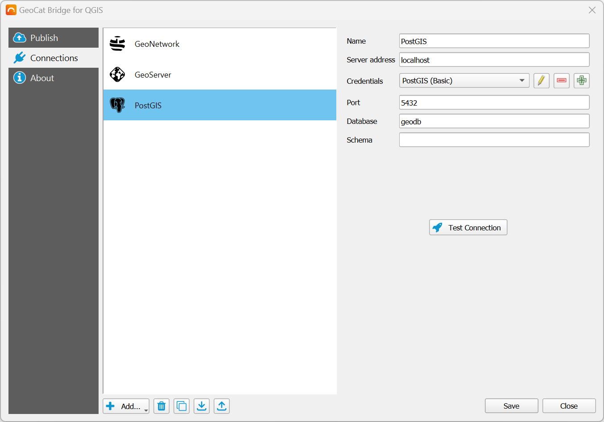
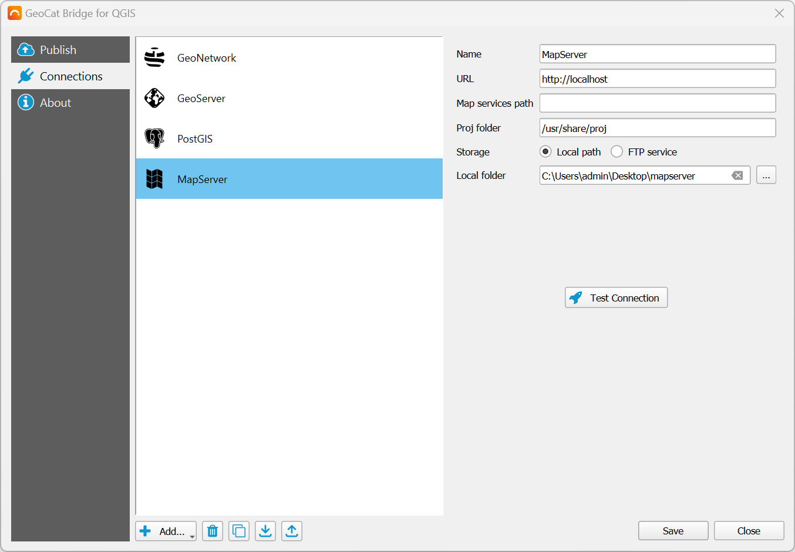

Server Connections¶
Before you can publish data with GeoCat Bridge, you will have to configure one or more server connections. This can be achieved in the Servers section of the Bridge dialog:
Adding connections¶
Click New Server and choose one of the supported server types to create a new server connection:
GeoServer
MapServer
PostGIS
GeoNetwork
If you wish to remove a server connection, select it from the left panel and click the Remove button. The Duplicate button may come in handy if you wish to try out an alternative configuration based on an existing server connection.
Below you can find more info about the different types of services and connections supported by Bridge.
GeoNetwork¶
Configure a GeoNetwork connection to publish your metadata to an online catalog (CSW).

srv, which will be used if you leave the Node field empty.Click Test Connection to verify that the connection can be established.
GeoServer¶
http://localhost:8080/geoserver) or the REST API URL (e.g. http://localhost:8080/geoserver/rest). Both URLs will work.If required, you can create and publish Mapbox styles for vector tiles. Mapbox styles and sprite sheets will be processed after all layers were successfully published to GeoServer.
Click Test Connection to verify that the connection can be established.
You should also specify how layer data will be stored on the server. Three different methods are available:
File-based storage¶
Import into PostGIS database (direct connect)¶
Import into PostGIS database (handled by GeoServer)¶
Note
Warning
PostGIS¶
Configure a PostGIS connection if you wish to upload layer data to PostGIS directly. Setting up this connection is required when using the Import into PostGIS database (direct connect) in a GeoServer connection.
Note
JNDI connection pool support is currently unavailable.
MapServer¶
Configure a MapServer connection to publish your map (layer data and symbology). A MapServer endpoint (Mapfile) is created for each QGIS project.
Under Storage, configure how Bridge should save the MapServer data. Choose Local path to store all files on the local file system. Choose FTP service to transmit the files over FTP to the online MapServer instance. Depending on which option is selected, you will see some additional parameters that must be configured:

Proxies & certificates¶
The GeoNetwork and GeoServer connections mentioned above communicate with the server over HTTP(S) and all their outgoing traffic is handled by the Python requests library.
Currently, GeoCat Bridge does not provide a way to set up a proxy server for these connections, and any QGIS proxy settings that may have been defined are ignored.
There are plans to add proxy support in future QGIS Bridge releases.
Any QGIS SSL certificate settings are also ignored, which means that Bridge will not be able to connect to servers that use self-signed certificates, for example.
However, there is a workaround to this problem. You could set a system environment variable called REQUESTS_CA_BUNDLE that points to a .pem certificate bundle.
This bundle should include the root certificate and any intermediate certificates that are required to verify the authenticity of the server certificate.